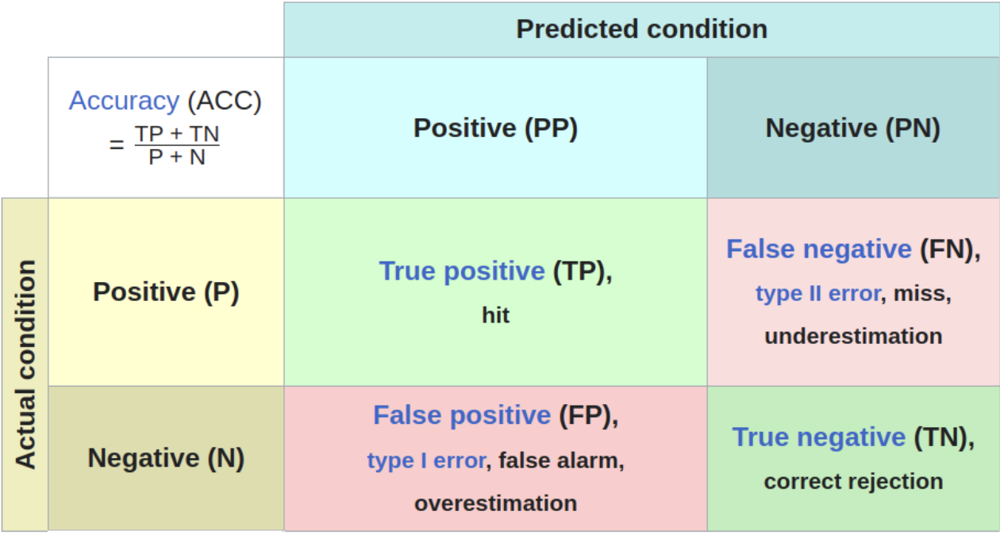

Introduction
In the world of machine learning, classification is a wildly used supervised learning method, which recognize patterns and make predictions about which category a new piece of data belongs to. Classifiction models are used in a variety of scenarios, such as predicting if an email is spam, determining if a customer is likely to churn, or diagnosing a disease based on medical images. However, just because a model provides an answer doesn’t mean it’s the right one. The model can make mistakes when making predictions, and some mistakes are more harmful than others. For example, if the model is used to detect tumors from scans. If the model misclassified a malignant tumor as a benign one, the patient might not reciving proper treatment in time and cause some serious consequences. To truly evaluate a model’s performance, we need more than just its accuracy score. This is where the confusion matrix comes in.
In this blog post, we’ll explain the confusion matrix, how it works, how to interpret the key metrics derived from it, and how to apply it in Python to evaluate your own classification models.
What is a Confusion Matrix
A confusion matrix is a table used to describe the performance of a classification model. It compares the actual values (true labels) against the predicted values, helping us understand where the model is making correct predictions and where it is making mistakes.
 need captain and reference
Figure 1 is a generalized confusion matrix for a binary classification model. There are only two labels in the target variable: positive and negative. The positive class is defined according to the problem, it is the label that we are interested in spotting. For example, if the model is used to detect spam emails, a spam email is considered as positive class while a ham email is considered as negative class. Here are some definitions of the terms in Figure 1.
True Positive (TP): The model predicted the positive class as positive. False Positive (FP): The model predicted the negative class as positive (Type I error). True Negative (TN): The model predicted the negative class as negative. False Negative (FN): The model predicted the positive class as negative (Type II error).
In the email classification example, a true positive means the model correctly identifies the spam email as spam. A false positive means the model marks an important email as spam. A true negative means the model identidies the ham email as ham. A false negative means the model is missing a spam email, and left it in your inbox.
Why is the Confusion Matrix useful
The confusion matrix breaks predictions into four categories, which can help data scientists understand the model performance better by knowing which kind of error the model tends to make. We can calculate a range of performance metrics by using the number of cases in the above four categories (TP, FP, TN, FN) to address different aspects of model evaluation.
Accuracy
Accuracy is the most comment used performance metric. It is the proportion of correct predictions (both positive and negative) made by the model out of the total number of predictions.
| Predicted Spam | Predicted Ham | |
|---|---|---|
| Actual Spam | 40 | 10 |
| Actual Ham | 5 | 45 |
\(\text{Accuracy} = \frac{\text{TP} + \text{TN}}{\text{TP} + \text{TN} + \text{FP} + \text{FN}} = \frac{40 + 45}{40 + 45 + 5 + 10} = \frac{85}{100} = 0.85\)
The accuracy provides a simple and high-level view of model performance. The max value of accuracy is 1. Better model always has higher accuracy. However, accuracy could be a misleading metrix. Imagine you are training the email classification model with an imbalanced dataset that contains 99 ham emails and only 1 spam emails, even the dummy model can reach an accuracy of 99% becuase it predicting every observation as ham. Although the accuracy is high, the dummy model does not have the ability to detect spam email. But don’t worry, we have other metrcis to help working with imbalanced datasets.
Precision
Precision is the proportion of true positive predictions over all positive predictions. It measures how many of the positive predictions made by a classification model are actually correct.
| Predicted Spam | Predicted Ham | |
|---|---|---|
| Actual Spam | 40 | 10 |
| Actual Ham | 5 | 45 |
\(\text{Precision} = \frac{\text{TP}}{\text{TP} + \text{FP}} = \frac{40}{40 + 5} = \frac{40}{45} = 0.89\)
Precision is important in scenarios where false positives are more costly or more harmful, such as the email classification model incorrectly classifies an important email as spam. The maximum value of precision is 1. Higher precision indicating fewer false positives. However, a high precision does not guarantee good model performance. In the email example, if the model predicts only one email as spam out of 100 spam emails and happens to be correct, the precision is 1 in this case, but the model fails to detect most spam emails.
Recall
Recall is the proportion of true positive predictions over all actual positive cases. It measures how many of the actual positive cases are successfully identified.
| Predicted Spam | Predicted Ham | |
|---|---|---|
| Actual Spam | 40 | 10 |
| Actual Ham | 5 | 45 |
\(\text{Recall} = \frac{\text{TP}}{\text{TP} + \text{FN}} = \frac{40}{40 + 10} = \frac{40}{50} = 0.8\)
F1-Score
F-score measures Precision and Recall at the same time and gives a balance between the two metrics.
| Predicted Spam | Predicted Ham | |
|---|---|---|
| Actual Spam | 40 | 10 |
| Actual Ham | 5 | 45 |
\(F1 = 2 \cdot \frac{\text{Precision} \cdot \text{Recall}}{\text{Precision} + \text{Recall}} = 2 \cdot \frac{0.89 \cdot 0.8}{0.89 + 0.8} = 0.84\)
• High Precision, Low Recall: The model is conservative, predicting fewer positives to ensure they are correct. This may miss some actual positives (high false negatives).
• High Recall, Low Precision: The model predicts many positives, catching most true positives, but also increases false positives.